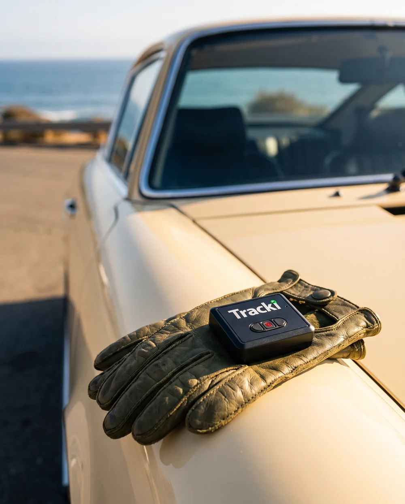
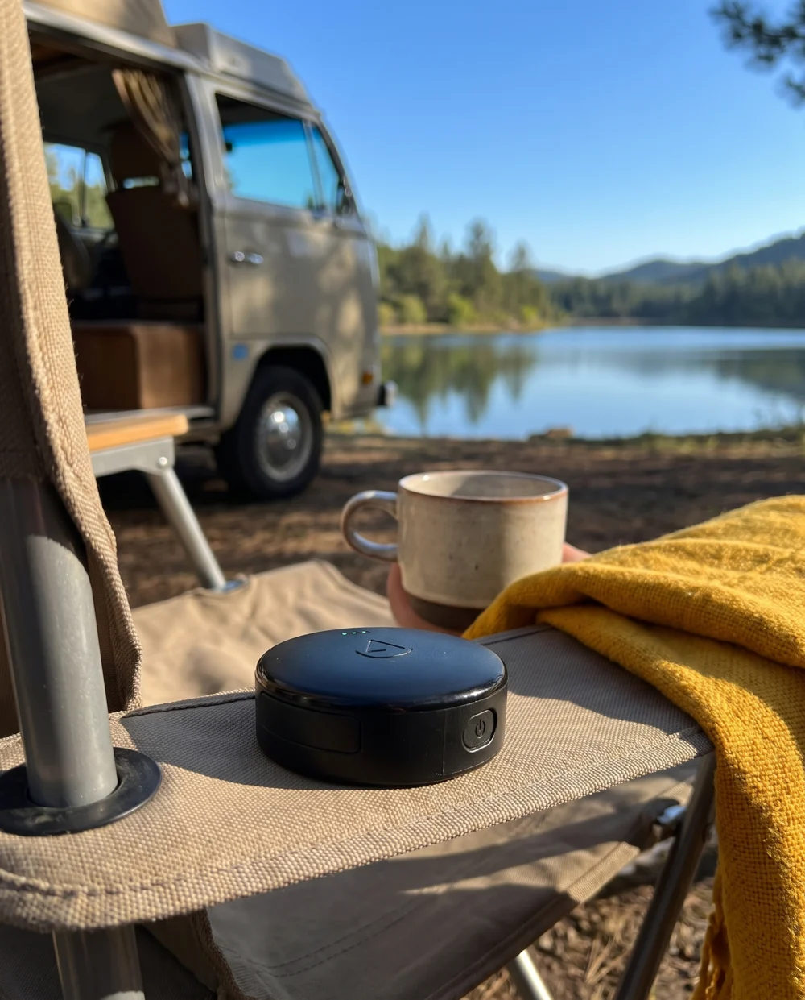

“I hadn’t thought of that.”
Make a specific ownership moment recognizable before introducing a device.
A small device.
A much bigger brand opportunity.
Build the consumer brand that makes connected ownership feel obvious. Use Meta to create the reason to buy. Earn the renewal by making everyday life easier.
Read the investment case ↓A proposed C&B venture. Benchmarks shown are existing third-party products.
Creative direction: connected confidence.
*Planning assumption, not verified customer revenue.
There is a credible opportunity here. The strongest version starts with something people already love owning.
A camper. A cherished car. A work trailer. People can care deeply about an object without actively shopping for a tracker. An ad can connect the feeling to a practical action.
The C&B move is to make the category desirable, understandable and easy to enter. The operational job is harder: dependable location, useful alerts, painless activation and a subscription people continue to value.
Start with owned vehicles and leisure assets. Partner for proven hardware and connectivity. Build the customer relationship, creative engine and service experience. Gate scale on paid activation and contribution.
Make a specific ownership moment recognizable before introducing a device.
Show cellular location, route history and boundary alerts in a concrete scenario.
Reduce uncertainty every week, with reliable service and restrained notifications.
The first market: people who would go back for their vehicle, camper or equipment.
Positioning territory: connected confidence.
Consumer promise: “Live more. Check less.”
Launch platform: “For everything you’d go back for.”

Pride, freedom and the things that make a life yours.
Demonstrate the alert, the route and the last successful update.
Show the full first-year price and renewal before checkout.
Owned assets, consensual sharing and location data kept private.
Primary product sources, a live Meta Ad Library check, and the four supplied Amazon screenshots. Observed September 16, 2026, Pacific time.
Spytec GPS showed approximately 7 active US ad results. Creative included fleet economics and a stolen-trailer story. LandAirSea Systems returned no active US ads under the same filters. This is a point-in-time page check; ad presence does not show spend or profitability.
Exact advertiser audit ↗A distinctive brand, useful service and a broader ownership story may reach less active shoppers. The audit does not establish a vacant market. This is the commercial hypothesis to test.
How we validate it ↓The four screenshots show $14.90–$26.95 hardware and displayed monthly purchase badges totaling 11K+. Those are rounded listing signals, not audited sales or paid subscriptions. Today’s site prices differ.
Compare products ↓Connectivity, support, payments, hosting, replacements and refunds consume the subscription. Activation, retention and true service costs are unknown for this proposed business.
Stress-test the economics ↓| Product | Device benchmark | Service / operating reality | Implication for C&B |
|---|---|---|---|
| Tracki UniversalCompact portable tracker | $14.99 on site $14.90 in supplied screenshot | Cellular plan required. Brand lists several monthly-equivalent rates depending on package. Battery claims vary with usage and accessory. | Price and basic functionality are easy to compare. Win on a clear use case and ownership experience. [1] |
| Tracki ProLonger-battery portable | $28.99 on site $23.99 in screenshot | 10,000 mAh; advertised 2–12 months depending on mode and network. Reporting interval depends on plan. | A better reference architecture for stored leisure assets; prove battery life at the promised cadence. [2] |
| Optimus 3.0 bundleTracker + magnetic case | $27.95 on site $26.95 in screenshot | $19.95/month; 20% annual-plan discount implies $191.52/year. US cellular coverage; current page says up to one month in standby. | Simple plans and useful alerts already exist. Annual price math is derived, not a checkout quote. [3] |
| LandAirSea 54Magnetic, rechargeable | $29.95 on site $14.95 in screenshot | $179.55/year at 3-minute updates; $224.55 at 1-minute. Historical playback and geofences. Battery claim: 1–3 weeks at active intervals. | Speed, price and battery are a three-way tradeoff. Avoid presenting maximum standby life as live-tracking life. [4] |
| Spytec / HapnAdjacent fleet competitor | Hardware included | OBD annual plan $107.40/year; wired $155.40/year. Fleet functionality and active Meta acquisition. | $200 is not an automatic pricing advantage. Avoid starting with undifferentiated fleet telematics. [5] |
| Apple AirTag (2026)Item finder | $29 single / $99 four-pack | Find My network, improved finding range and speaker; no cellular service subscription. User-replaceable coin cell. | Excellent for many belongings. The upgrade must solve a task worth recurring payment. [6] |
Battery and product-page claims are manufacturer statements, not independent lab tests. Tracki’s pages contain inconsistent battery/spec details; do not transplant them into launch claims. Screenshots and current websites also use different offers.
Sell the job a cellular tracker does well: location updates from the device, a route record and configured boundary alerts.
AirTag uses nearby participating devices to relay location through Find My. Cellular GPS uses satellite positioning and a mobile network to send updates. It still needs coverage, usable signal and power. Neither is a guarantee of recovery.
AirTag location is private. Its unwanted-tracking alerts are a safety feature; they do not make everyone’s location visible to any iPhone. Build the argument around owned-asset utility. [7]
Low cost, convenient nearby finding and a broad finding network. AirTag also supports left-behind notifications, so “AirTag has no alerts” is an inaccurate comparison. [8]
A camper leaves storage. Equipment arrives at a job. A car moves outside a chosen window. Prove the specific update cadence, alert delay and battery behavior before claiming the benefit.
An item finder helps you find it.
Connected GPS helps you follow the journey.
Follow with an actual side-by-side field demonstration. Avoid absolute range, instant-alert or invisible-tracking claims.
Attract people with an object they value. Keep them with service they use. Segment rankings below are strategic judgments, not measured conversion forecasts.
Lead segment. Clear emotional stake, visible creative stories and a reason to check an asset while away. Start with portable hardware suitable for the actual mounting and charging routine.
Second test. Practical asset value and possible multi-device demand. Competition is stronger; win a narrow use case before building fleet-management breadth.
Expansion. More devices and simpler shared visibility may matter, but phone location-sharing and inexpensive tags are strong substitutes. Test willingness to pay.
Later, with dedicated products. Pet incumbents already combine location with health features. Flight rules, animal fit and high-stakes care needs require separate product work. Generic hardware is not a universal answer. [9]
US RV-owning households in RVIA’s 2025 study. Median owner age: 49. This is an audience denominator, not validated demand for our product. [10]
| Illustrative paid adoption | Paid devices* | Annual revenue at $200 |
|---|---|---|
| 0.1% | 8,100 | $1.62M |
| 0.5% | 40,500 | $8.10M |
| 1.0% | 81,000 | $16.20M |
*One paid device per adopting household. Scenario math, not a forecast. No additional vehicle or household categories are added, avoiding overlap. RVIA changed survey methodology in 2025; the ownership figure is not a like-for-like trend against 2021.
Why calm confidence beats panic: In the adjacent powersports market, NICB reports a 20% decline in 2025 thefts of motorcycles, ATVs, snowmobiles and watercraft; 63% remained unrecovered. This is not motorhome or camper theft data. The problem persists, but an “exploding theft epidemic” story would misstate this evidence. [11]
Adjust the model. Every input is illustrative. There are no supplied activation cohorts, retention data, vendor quotes or verified gross margins for this venture.
8,500 paid subscriptions from this cohort
Paid devices = shipped devices × activation. Initial annualized subscription revenue = paid devices × annual net subscription revenue. Gross margin = (subscription revenue − direct service cost) ÷ subscription revenue.
Year-one contribution = shipped devices × [hardware contribution − acquisition cost + activation × (annual subscription revenue − direct service cost)]. Three-year contribution per shipped device = hardware contribution − acquisition cost + activation × (revenue − direct service cost) × (1 + retention + retention²).
*Before fixed overhead, corporate tax, development costs and cost of capital. Hardware contribution must already deduct landed hardware, fulfillment, shipping subsidy, returns and warranty provision. Net subscription revenue excludes tax and refunds; direct service cost must include connectivity, cloud, payments, messaging, variable support and service replacements without double counting.
**Payback uses acquisition cost net of hardware contribution divided by average monthly year-one service contribution. This is an accrual approximation with activation at cohort start; it ignores timing of activation and intra-year churn. Annual prepayment changes cash timing, not earned profit. Retention is modeled at annual renewal, with constant pricing/cost, no reactivation and no expansion. No new cohorts are added.
Commercial: activated-device CAC, 30-day refunds, involuntary churn, annual renewal and second-device attachment.
Operational: contracted cellular cost by country and reporting cadence, support contacts per active device, measured battery performance, mapping costs, warranty failures and supplier certification.
Cash: inventory deposits, device subsidy, refund reserves, renewal timing and service obligations on prepaid annual plans.
Partner or white-label first. Qualify cellular coverage, GNSS reception, mounts, battery behavior and the app before custom tooling. LandAirSea publicly offers embedded and white-label solutions, making partnership a concrete route to investigate. No partner commitment is implied. [12]
A clean location screen, route history, useful geofences, battery reminders, shared access with consent and dependable support. Onboarding ends at the first successful live-location and boundary-alert test, not at account creation.
Proposed framing test: $29 device + $199 annual service versus $228 for device and first year. Same total, same renewal disclosure, different framing. Also test a clearly priced monthly plan. These are proposed offers, not live prices or profitability claims.
Know where it is, see its journey, choose the alerts that matter.
Multi-device setup, transparent add-on pricing and an easy seasonal routine.
“Remind me to charge before Friday.” “Summarize this week’s trips.” “Tell me when my trailer leaves the yard.”
Agent features are proposals. Test incremental willingness to pay after dependable core service. Ground answers in timestamped device events, show stale-data status, preserve granular sharing controls and require user confirmation for external escalation. Do not turn standard geofences into an artificial AI paywall.
A proposed $30,000 media test, released in stages. No campaigns have been launched and no media budget has been spent by this project. Product validation costs sit outside this media budget.
Interview 20 owners, including recent buyers and non-searchers. Field-test at least 20 devices in real mounting locations and known coverage conditions. Log update latency, false alerts, recharge intervals and setup failures. Get supplier and support-cost quotes.
GATE: A truthful, reproducible promise and an operable service.Release up to $6,000. Test three ownership segments × two motivations × two executions. Launch 12 strong creatives first; keep the remaining library as controlled iterations. Match each ad to a dedicated, price-transparent landing page.
GATE: Directional evidence by segment, plus paid activation and refund tracking.Release up to $9,000. Improve activation, demonstrate actual features and test annual-offer framing. Track original cohorts through day 30. Recalculate contribution using realized service and support costs.
GATE: Activated CAC below the measured contribution ceiling, with a margin of safety.Release up to $15,000 only if the economics survive. Run a randomized lift test if eligible and adequately powered; otherwise design a matched-market test and report uncertainty. Include Amazon spillover, branded search and total paid activations in the readout.
GATE: Incremental profitable demand. Annual retention remains unproven at day 90.Primary: incremental CAC per paid activated device; year-one contribution; 30-day refunds and service failures.
Diagnostic: product comprehension, activation funnel, alert reliability, battery-related churn, support load and intent at first exposure.
Decision: pause any segment whose realized acquisition cost exceeds its year-one contribution ceiling. A cheaper hardware purchase conversion alone is not a scale signal. Meta’s own measurement guidance recommends incrementality experiments. [13]
100 Higgsfield-generated concepts. 25 per supplied product. 60 feed portraits, 20 stories and 20 squares. Six creative territories with distinct scenes and hooks.
These are concept source images, not approved live advertisements. Benchmark brand identities are preserved; no affiliation or new C&B hardware design is implied. Headline suggestions accompany each image. Product scale, markings and performance claims require production review.
Download the 100-asset index ↓No concepts match these filters. Choose another product or format.
Meta can be the demand engine. A brand can make the category feel different. Reliable service and retained subscriptions decide whether it becomes a good business.
Pressure-test the numbers ↑Research date: September 16, 2026 (Pacific). Linked pages may change. This is a strategic proposal using public data, supplied screenshots and explicitly labeled planning assumptions.
The venture’s brand name and ownership; target geography beyond the US launch assumption; hardware sourcing and certification; contracted service costs; real activation and renewal cohorts; conversion lift; consumer willingness to pay; final claim validation; and product-image fidelity at full production scale. This pitch recommends a validation program, not an acquisition valuation or guaranteed outcome.